A Bayesian theory for the estimation of biodiversity
ISBA 2026, Nagoya
Warm thanks (statistical team)
Ching-Lung Hsu
(Duke University)
Alessandro Zito
(Harvard School of Public Health)
David Dunson
(Duke University)
Warm thanks (ecological team, and more…)
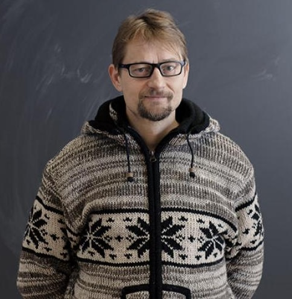
Otso Ovaskainen
(University of Jyväskylä)

Tomas Roslin
(University of Helsinki)

International BARCODE OF LIFE
- …and Niittynen, P., Hebert, P. D. N., Zakharov, E., Ratnasingham, S., and the entire iBOL Consortium!,
Species sampling models
Let X_1,\dots,X_n be some collection of species or taxa. Suppose X_n are conditionally iid samples from a species sampling model: (X_n \mid \tilde{p}) \overset{\text{iid}}{\sim} \tilde{p}, \qquad \tilde{p}(\cdot) = \sum_{h=1}^{\infty}\pi_h \delta_{Z_h}(\cdot), \qquad n \ge 1, where (\pi_h)_{h \ge 1} is a set of probabilities (species proportions) and Z_h represent distinct species.
The discreteness of \tilde{p} identifies Y^{(n)}=y distinct taxa X_1^*, \ldots, X_y^* with frequencies n_1, \ldots, n_y, called abundances in ecology.
Gibbs-type priors have emerged as the most natural extension of the DP (De Blasi et al. 2015).
The predictive distribution of a Gibbs-type prior is given by: \mathbb{P}(X_{n+1} \in \cdot \mid X_1,\dots,X_n) = \frac{V_{n+1, y+1}}{V_{n,y}}P(\cdot) + \frac{V_{n+1, y}}{V_{n,y}}\sum_{j=1}^y(n_j - \sigma)\delta_{X^*_j}(\cdot). where (a)_{n} denotes a rising factorial, and \sigma < 1 is the discount parameter. The V_{n,y}’s are non-negative weights satisfying a forward recursive equation.
Three notable examples
Dirichlet multinomial (\sigma < 0). For \sigma < 0 and H \in \mathbb{N}, a valid set of Gibbs coefficients is given by: V_{n, y}(\sigma, H) := \frac{|\sigma|^{y-1}\prod_{j=1}^{y-1}(H - j)}{(H|\sigma| +1)_{n-1}} \mathbb{I}(y \le H).
Dirichlet process (\sigma = 0). For \sigma = 0 and \alpha > 0, a valid set of Gibbs coefficients is given by: V_{n, y}(\alpha) := \frac{\alpha^y}{(\alpha)_n}.
\sigma-stable Poisson–Kingman process (0 < \sigma < 1). For \sigma \in (0,1) and gamma \gamma > 0, a valid set of Gibbs coefficients is defined as: V_{n, y}(\sigma, \gamma) := \frac{\sigma^y\gamma^y}{\Gamma(n-y\sigma)f_{\sigma}\left(\gamma^{-1/\sigma}\right)} \int_{0}^{1}s^{n-1-y\sigma}f_{\sigma}\left(\left(1-s\right)\gamma^{-1/\sigma}\right)\, \mathrm{d}s, where f_\sigma(t) = (\pi)^{-1} \sum_{h=1}^\infty (-1)^{h+1}\sin(h \pi \sigma )\Gamma(h\sigma + 1) / t^{h\sigma + 1}.
The quantification of biodiversity (Lijoi et al. 2007)
The simplest measure of biodiversity is arguably the taxon richness Y^{(n)} = y.
A priori, the distribution of Y^{(n)} induced by a Gibbs-type prior has a simple form: \mathbb{P}(Y^{(n)} = y)=V_{n,y}\frac{\mathscr{C}(n,y;\sigma)}{\sigma^y}, where \mathscr{C}(n, y;\sigma) denotes a generalized factorial coefficient.
The a priori expectations \mathbb{E}(K_1),\dots,\mathbb{E}(K_n) define a model-based rarefaction curve.
The posterior distribution of the number of previously unobserved taxa Y_m^{(n)} is \mathbb{P}(Y_m^{(n)}= j \mid X_1,\dots,X_n)=\frac{V_{n + m, y + j}}{V_{n, y}}\frac{\mathscr{C}(m, j;\sigma, -n + y\sigma)}{\sigma^j}, \qquad j=0,\dots,m, where \mathscr{C}(m, j;\sigma, -n + y\sigma) is the noncentral generalized factorial coefficient.
The posterior expectations \mathbb{E}(Y^{(n+1)} \mid Y^{(n)} = y), \dots, \mathbb{E}(Y^{(n + m)} \mid Y^{(n)} = y) represents a model-based extrapolation of the accumulation curve.
Rarefaction and extrapolation
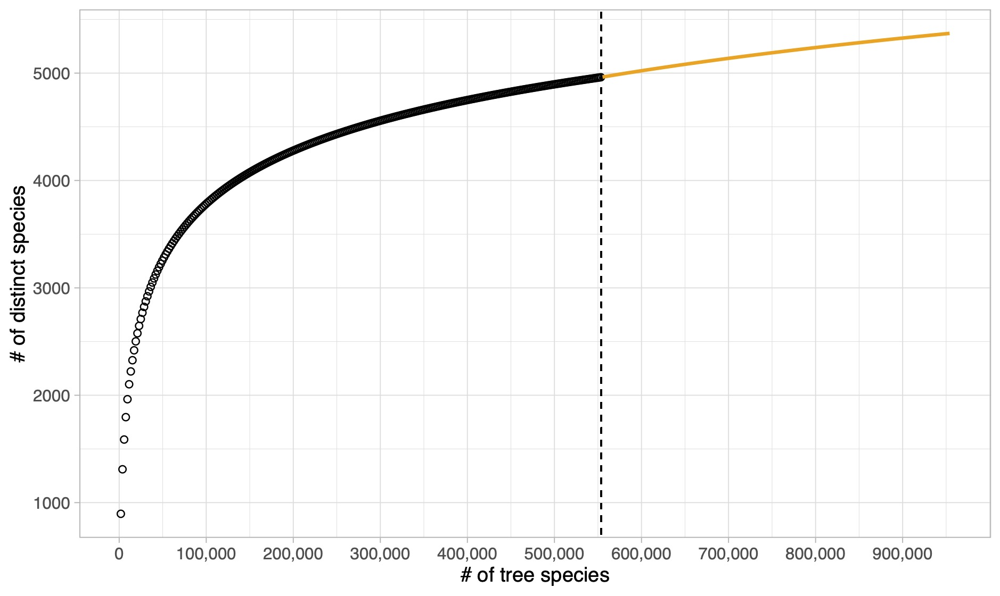
A characterization theorem
The Dirichlet multinomial, Dirichlet process, and \sigma-stable PK form the foundation of any Gibbs-type prior.
In fact, any Gibbs-type process can be represented hierarchically, involving a suitable prior distribution for the key parameters H, \alpha, and \gamma.
The \sigma-diversity (Pitman 2003)
- Let Y^{(n)} be the number of distinct values arising from a Gibbs-type prior:
- Let \sigma < 0 and V_{n, y}(\sigma, H) be the weights of a Dirichlet multinomial, then Y^{(n)} \rightarrow H a.s.
- Let \sigma = 0 and V_{n, y}(\alpha) be the weights of a Dirichlet process, then Y^{(n)} / \log(n) \rightarrow \alpha a.s.
- Let \sigma \in (0,1) and V_{n, y}(\sigma, \gamma) be the weights of a \sigma-stable PK, then Y^{(n)} / n^\sigma \rightarrow \gamma a.s.
- Moreover, consider a generic set of weights V_{n, y} and let c_\sigma(n) = \begin{cases} 1, & \sigma <0,\\[2mm] \log(n), & \sigma = 0,\\[1mm] n^{\sigma}, & \sigma \in (0,1) \end{cases} Then, as n \rightarrow \infty: \frac{Y^{(n)}}{c_\sigma(n)} \overset{\textup{a.s.}}{\longrightarrow} S_{\sigma}. The r.v. S_{\sigma} is the \sigma-diversity and its distribution coincides with the prior for H, \alpha, and \gamma.
Specimens and BINs in Barcode of Life
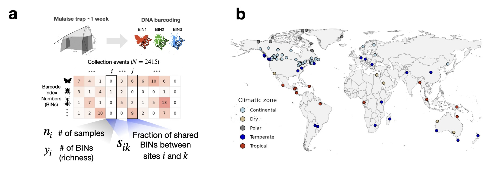
Our data: global Malaise Trap project.
We have a total of 1,781,340 arthropods split across 154,688 BINs and N = 2415 sampling sites.
How can we link covariates with biodiversity?
For outcome Y_i and covariates \bm{x}_i = (x_{i1}, \ldots, x_{ip}) \in \mathbb{R}^p, i = 1, \ldots, N, a generalized linear model (GLM) extends the linear model in non-Gaussian settings via three ingredients:
The exponential dispersion family directing each Y_i: f(y_i; \theta_i, \phi) = \exp\left\{\frac{y_i \theta_i - b(\theta_i)}{a_i(\phi)} + c(y_i, \phi)\right\}, where \theta_i \in \Theta is the natural parameter, \phi > 0 is the dispersion, and a_i,b,c are given functions.
The linear predictor \eta_i = \bm{x}_i^\top \bm{\beta}, with \bm{\beta} \in \mathbb{R}^p.
A monotonic link function g that links \eta_i with the mean of Y_i, namely \mu(\theta_i) = \mu_i: \mathbb{E}(Y_i \mid \bm{x}_i) = \mu_i = g^{-1}(\eta_i). The link is canonical when g is such that \theta_i = \eta_i.
Is there an exponential family that is related to a sample-specific diversity \alpha_i?
The Hubbell regression
- The number of distinct species from a DP is an exponential family! \mathbb{P}(Y^{(n)} = y; \alpha) = \frac{\alpha^y}{(\alpha)_n}|s(n, y)|, \qquad y \in\{ 1, \ldots, n\}, where (\alpha)_n = \Gamma(\alpha + n)/\Gamma(\alpha) and |s(n,y)| are signless Stirling numbers of the first kind.
The canonical link
Using the canonical link, we have: \log \alpha_i = \theta_i = \bm{x}_i^\top \bm{\beta} = \eta_i, \qquad \mu_i = \mu(\bm{x}_i^\top \bm{\beta}, n_i) = \sum_{j = 0}^{n_i-1} \frac{e^{\bm{x}_i^\top \bm{\beta}}}{e^{\bm{x}_i^\top \bm{\beta}} + j} = g^{-1}(\bm{x}_i^\top \bm{\beta}, n_i).
Coefficients \bm{\beta} have the classic interpretation of log-linear models in terms of \alpha-diversity
- The saturated model corresponds to the case in which \hat{\alpha}_i \approx \hat{\alpha}^{\text{Fisher}}_i. The null model corresponds to the case \hat{\alpha}_i = \hat{\alpha} for all sites, i.e. there is no variation in biodiversity across sampling sites.
Beyond the logarithmic growth: non-canonical links
Extensions of the neutral theory of Hubbell (2001) proposes a power-law behavior with a dispersal limitation parameter \omega \ge 0 so that \mathbb{E}\left(Y_i^{(n)}\right) = \sum_{j = 0}^{n_i-1} j^{-\omega} \frac{\alpha_i}{\alpha_i + j}.
Our proposal: a flexible growth depending on \sigma < 1 via non-canonical link \mu_i = \mu(\bm{x}_i^\top\bm{\beta}, n_i, \sigma) = \sum_{j = 0}^{n_i-1} \frac{e^{\bm{x}_i^\top\bm{\beta}}}{e^{\bm{x}_i^\top\bm{\beta}} + j^{1-\sigma}} = g^{-1}(\bm{x}_i^\top\bm{\beta}, n_i, \sigma), \qquad \sigma < 1. The parameter \sigma plays the same role it has in Gibbs-type priors.
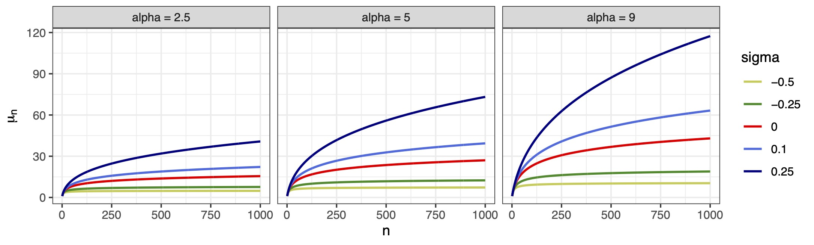
Regression-based biodiversity indexes
- This gives a novel notion of regression-based biodiversity.
Composite marginal likelihood and standard errors
The assumption behind GLMs is that observations are independent. In our case, we might have seen the same species (or BIN) at two different locations!
This information is lost when calculating the number Y_i^{(n_i)}. However, we can interpret L(\boldsymbol{\beta}) \propto \prod_{i=1}^N \frac{\alpha_i^{y_i}} {(\alpha_i)_{n_i}}, as a composite marginal likelihood. The estimating equation is still unbiased and estimates consistent.
We propose spatially heteroskedastic-consistent standard errors (Conley 1999) that use the Jaccard Index (or similar indices) between two samples: \widehat{\mathrm{se}}(\hat{\boldsymbol{\beta}}) = (\bm{X}^\top \hat{\bm{W}}\bm{X})^{-1} \textstyle\sum_{ik} {\color{#8B0000}{s_{ik}}}\, {\color{blue}{\hat{\bm{u}}_i\hat{\bm{u}}_k^\top}}\, (\bm{X}^\top \hat{\bm{W}}\bm{X})^{-1}, \qquad {\color{blue}{\hat{\bm{u}}_i}} = \frac{\partial}{\partial\boldsymbol{\beta}} \log \mathcal{L}(\hat{\boldsymbol{\beta}}), where {\color{#8B0000}{s_{ik}}} \in [0,1] is the fraction of shared BINs between locations i and k.
Our scientific questions
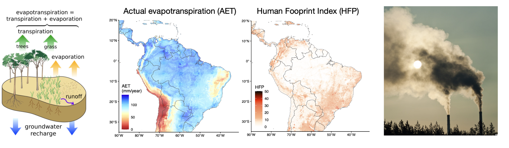
Is (actual) evapotranspiration the main driver of diversity?
How does anthropogenic impact affect diversity?
Modelling approach
- Goal: test the joint effect of evapotranspiration and human footprint
HubbelGLM(cbind(n, y) ~ ., family = hubbell(sigma = 0), data = data)Hubbell achieves the best predictive performance
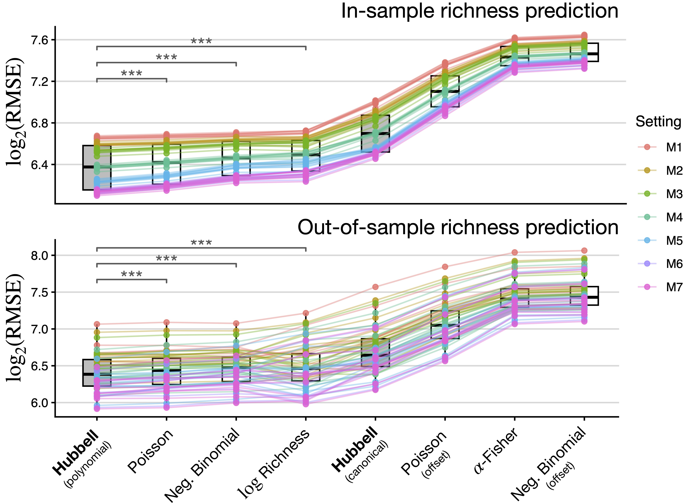
We run a 10-fold cross-validation experiment. Our benchmarks are other GLMs (matching the growth rate with n).
For each nested specification, we split the data into 10 folds, train all models in 90% of the data and predict the remaining 10% (cycle through).
Key results
Model M0: \sigma is estimated as 0.562. Square root!
Model M1:
AETexplains nearly 30% of the total variation in species richnessModel M7:
- A 10 mm/year increase in
AETleads to a 12.4\% increase in diversity on average (\beta = 0.012; P < 0.0001). - A 5 units on the
HFPscale is associated with a 6.1\% reduction in diversity in tropical areas (\beta = −0.013; P < 0.0001), and a 7.5\% reduction in dry zones (\beta = −0.016; P < 0.004) - Polar areas show an interesting increase of 8.2\% (\beta = 0.016; P < 0.038)
- No detected effect in continental areas
- A 10 mm/year increase in
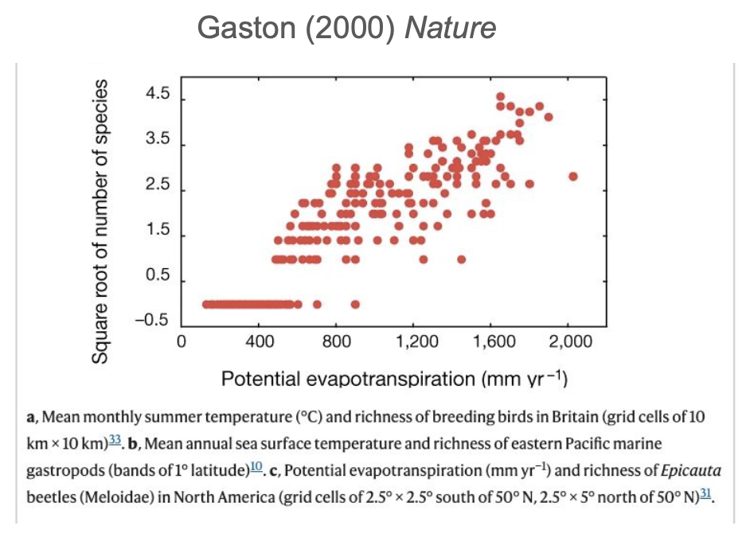
Effects for all diversity indices: variations
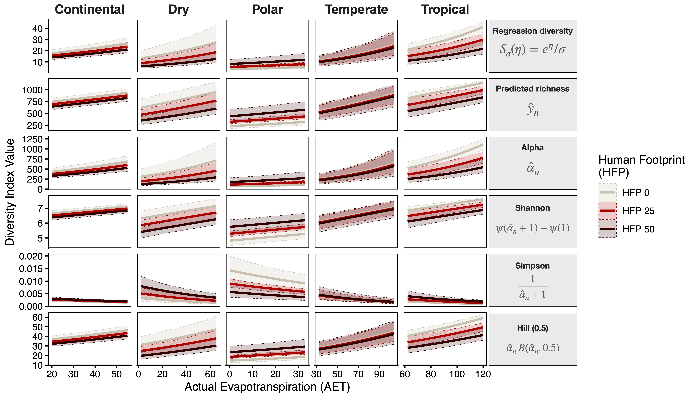
Effects for all diversity indices: global scales
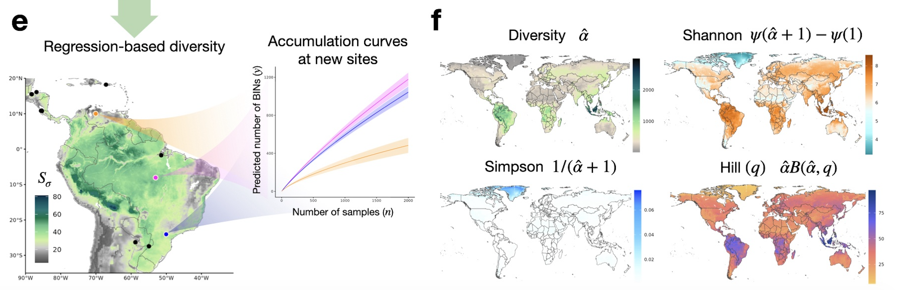
Scenario evaluation
A 5‑unit intensification of human presence globally leads to up to an 8\% reduction in potential richness
A 10\% increase in
AETis associated with an average 3.81\% increase in potential richness.
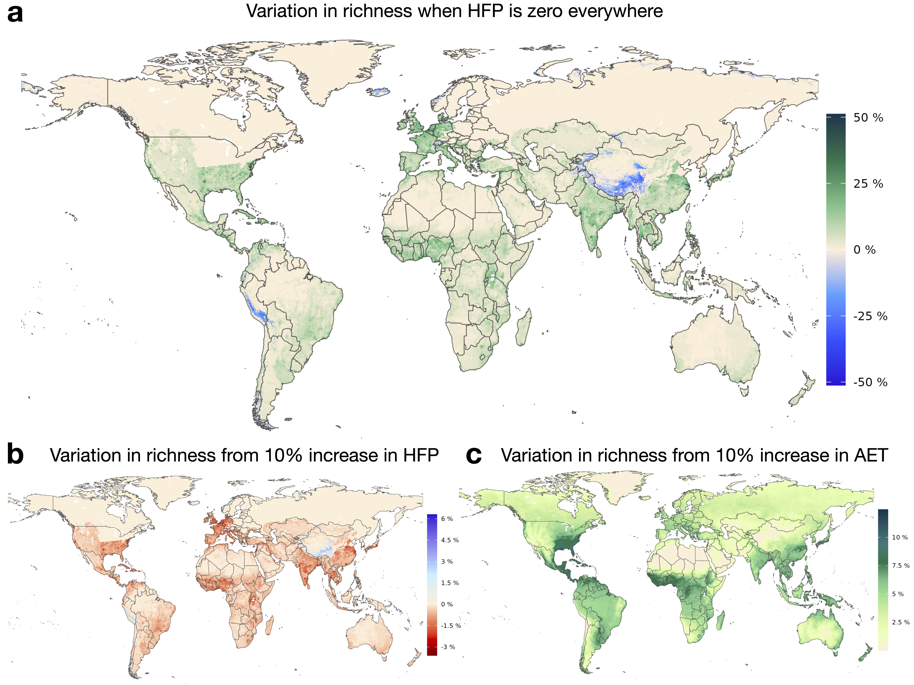
Summary and future directions
Fisher’s \alpha is the same quantity described by Hubbell’s unified neutral theory of biodiversity, and it has deep connections with the Dirichlet process.
The Hubbell regression extends the neutral theory in a covariate-dependent GLM framework.
Different growth rates are captured via \sigma < 0, \sigma = 0, and \sigma \in (0,1).
From here to infinity: next steps
- Extend to mixed models, allowing for random effects;
- More on nonparametrics: GAMs
Software: the R package HubbellGLM
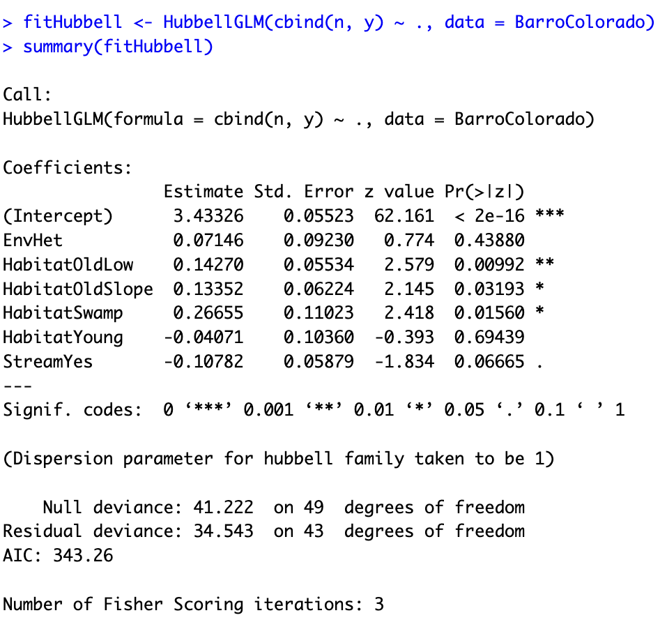

Hubbell regression paper available on biorXiv
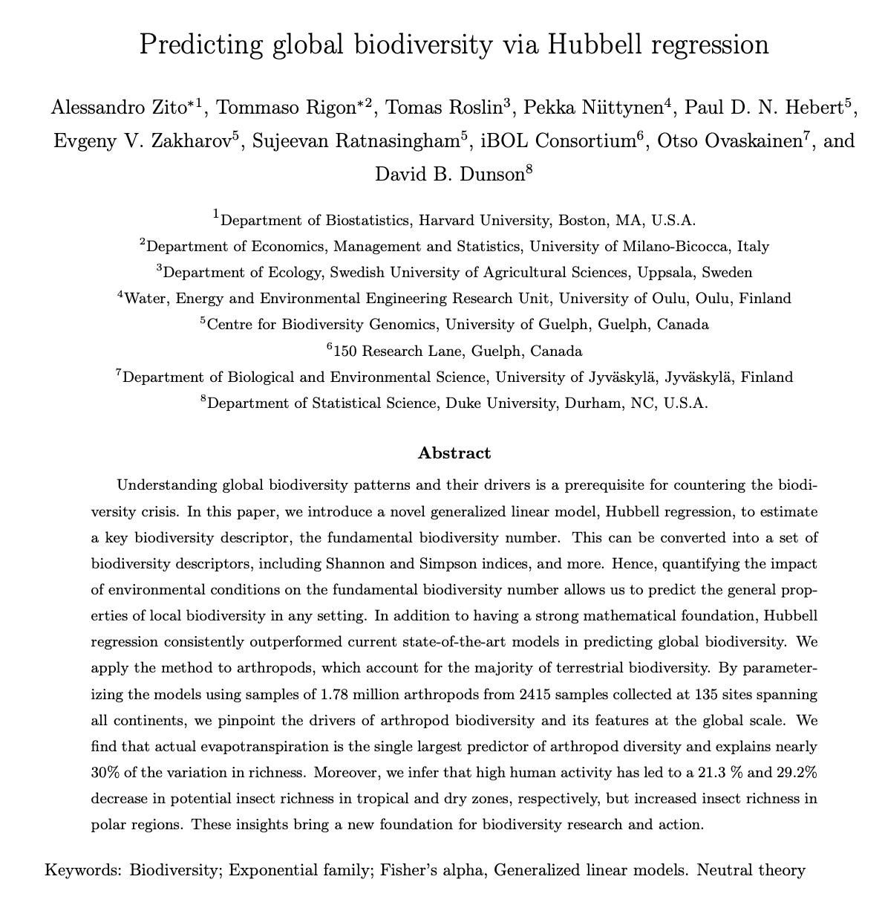